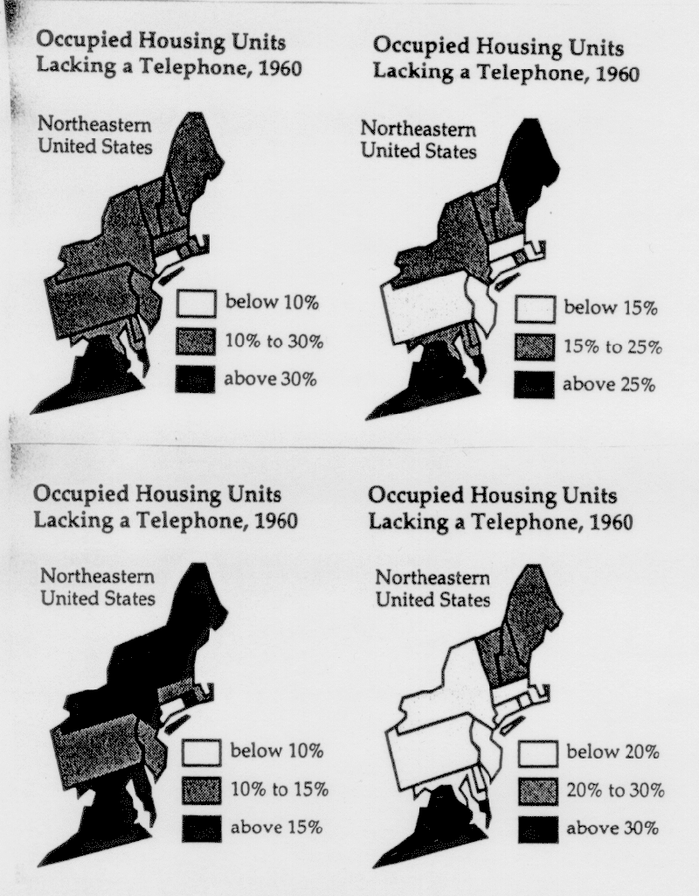

Stat 250, Section 003, Homework Assignment 3 (Due 2/17/99 in class)
- 1) Please work on the following textbook exercises in
Moore: (8 points)
- Exercise 1.22, 1.24, 1.26, 1.28
- 2) Look at the Barley data at
http://www.monumental.com/dan_rope/gpl/barley.html
again. Compare the two years 1931 and 1932 (this can be done
most easily if you grab one of the data columns with the mouse
and move it into the other data column - if this does not
work with your Web browser, look at the data very carefully...).
Isn't there something strange in the data? Explain! (4 points)
- 3) This is an example from Mark Monmonier's book
"How to Lie with Maps". The 4 graphics (maps) show the
effect of selecting different class widths and starting
points when visualizing data in a geographic context. (8 points)

- a) (i) If you were the governor of New York, which graphic would
you use to demonstrate how advanced your state is?
(ii) If you were the governor of Connecticut, which graphic would
you use to demonstrate how advanced your state is?
(iii) If you were the governor of New Jersey, which graphic would
you use to demonstrate how advanced your state is?
(iv) If you were the governor of Virginia, which graphic would
you use to demonstrate how far behind your state is and
desperately needs federal funding?
(v) If you were a historician who wants to show how few telephones
were around in 1960, which graphic would use?
- b) Now find the "true" interval for the following 5 states.
Do this by calculating the intersection of the class intervals used within
the 4 graphics above:
Maine
New York
Connecticut
New Jersey
Virginia
- c) Describe your findings from b) in one or two sentences.
- d) Now think of micromaps. Can you manipulate these as easily
as these maps to express different political opinions? Explain.
Describe how a micromap of this data might look like.